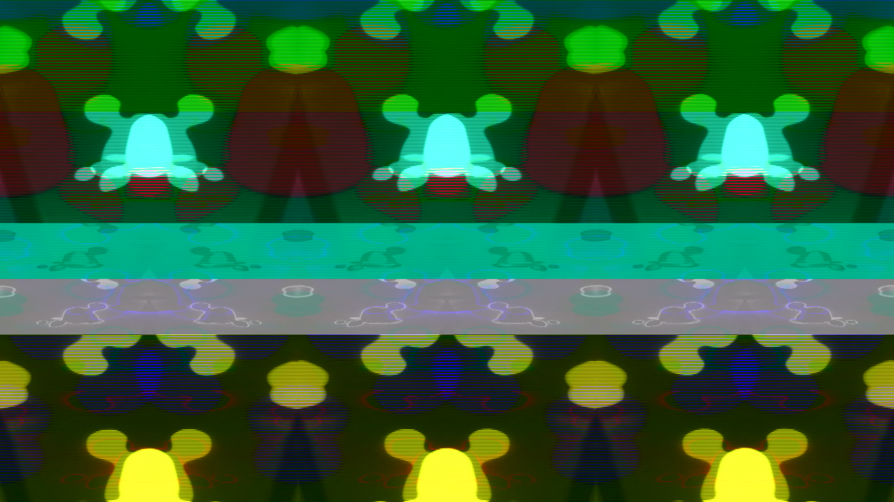
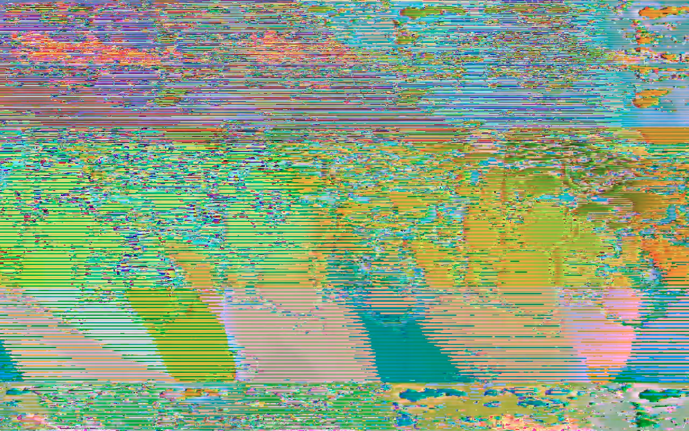
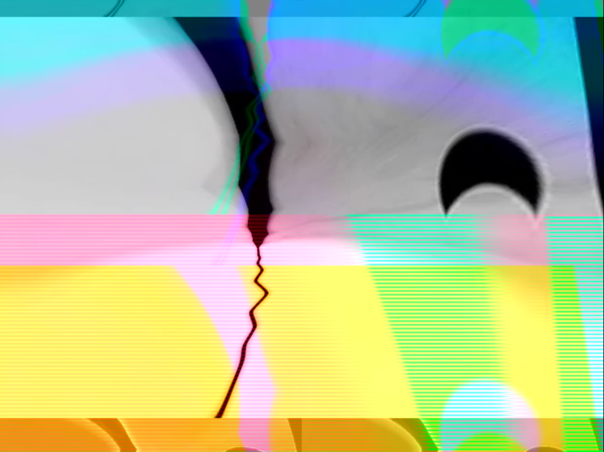
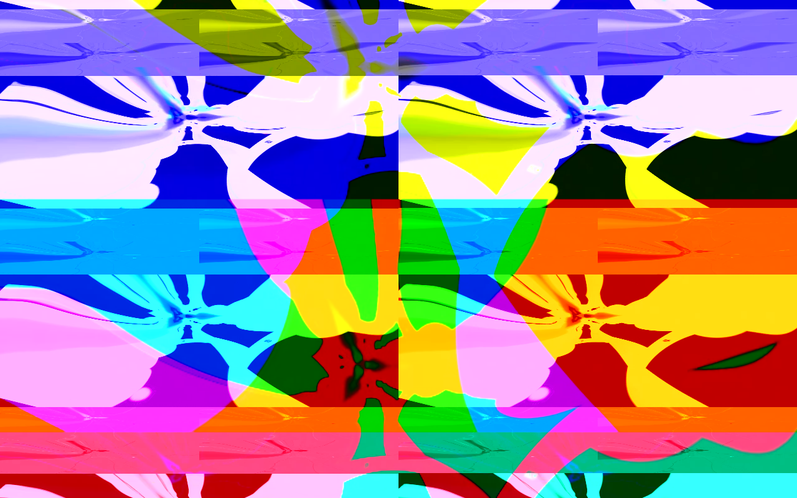
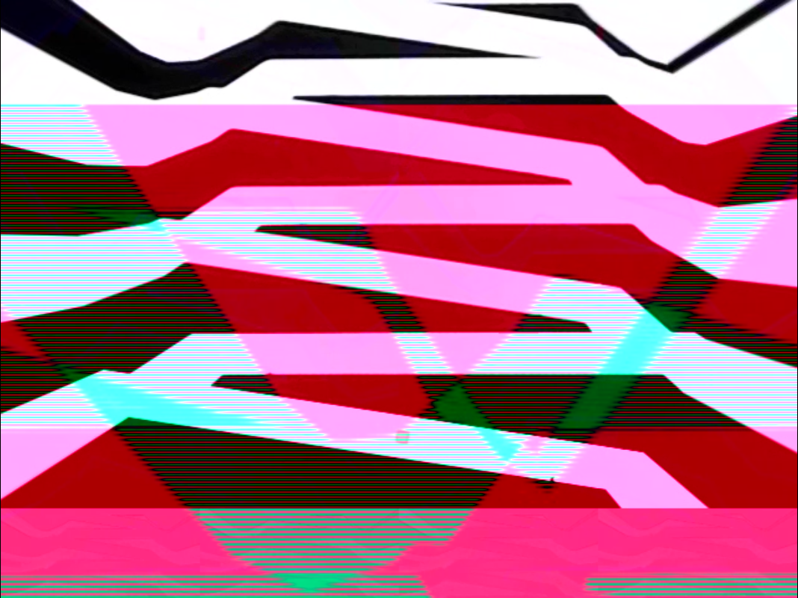
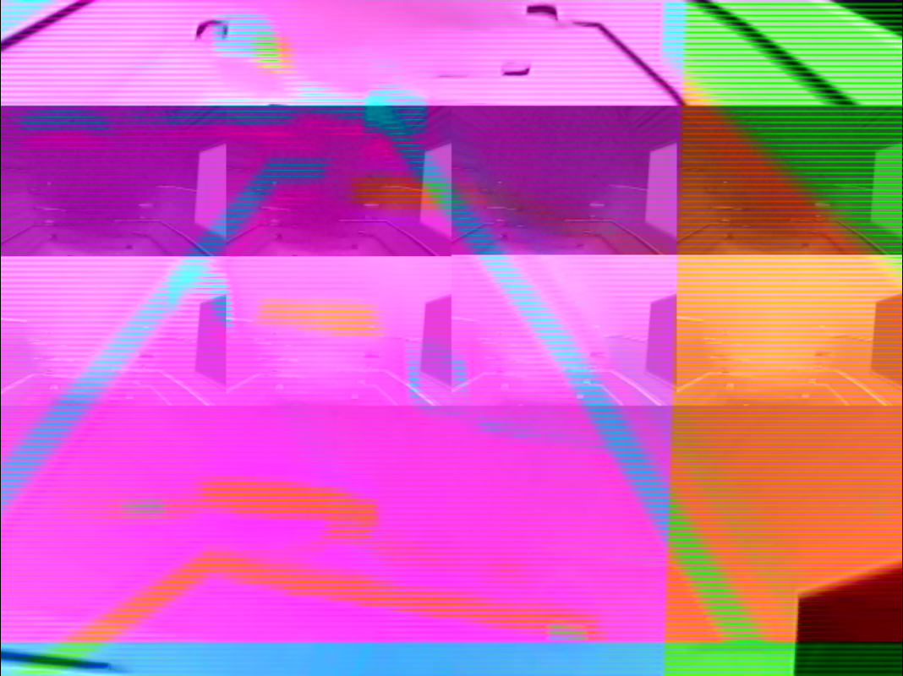
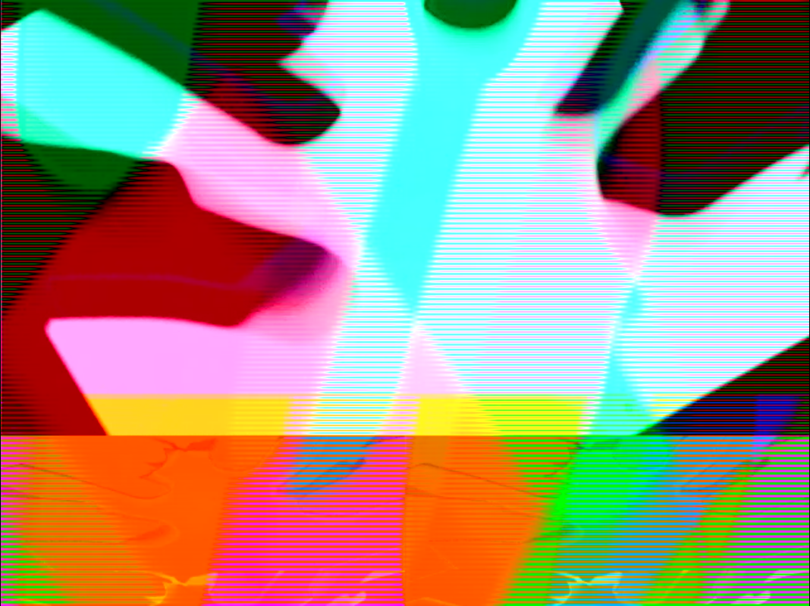

<
DJ/Producer, event manager, label owner, coder and audio visual practitioner specialising in all things vibrant and groovy currently based in Bristol. Part of Do-IY collective. Collaboration piece with Tom Stokely.
// henryjaames gmail com
Virtual Boundaries






